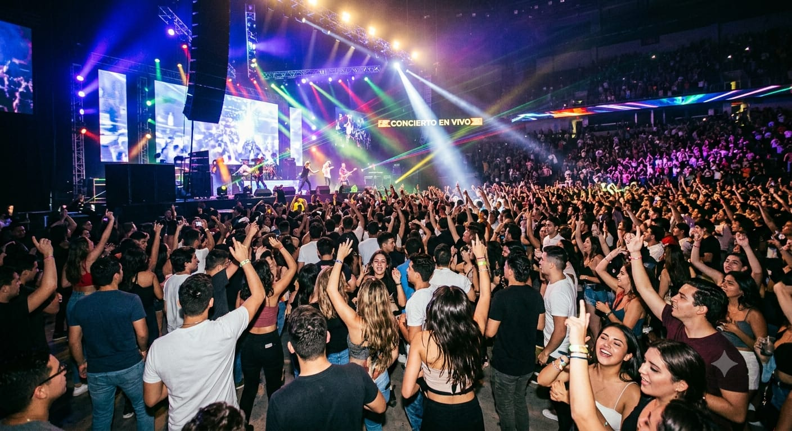

Sobre Nosotros

Somos un blog musical creado por un equipo apasionado por la música, donde compartimos la historia, evolución y grandes exponentes de diferentes géneros musicales.
Nuestro objetivo es conectar a los amantes de la música con artistas, canciones y culturas que han marcado generaciones.

Nuestra comunidad musical
En nuestro blog encontrarás contenido sobre Pop, Rock y Música Urbana, destacando artistas reconocidos, sus trayectorias y canciones más importantes.
